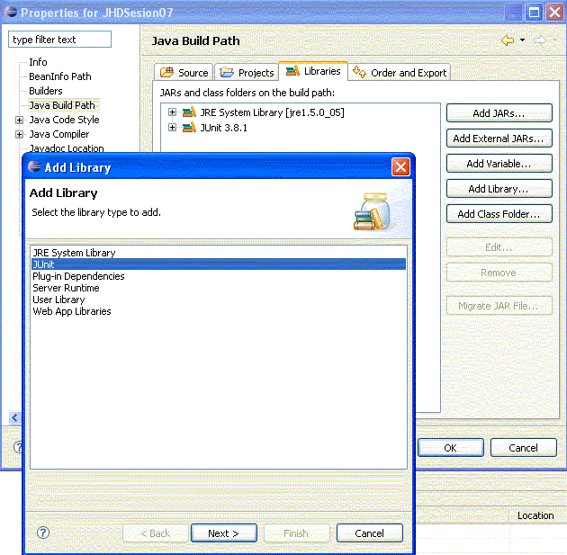
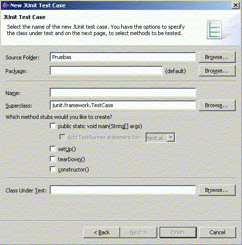
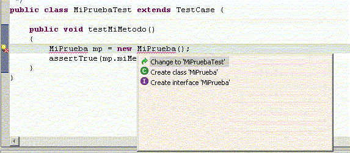
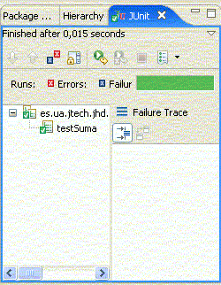
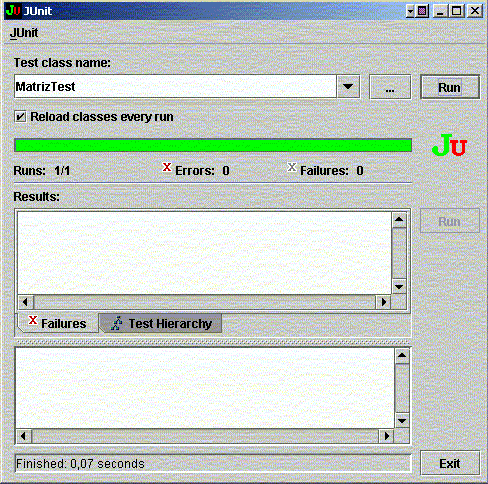
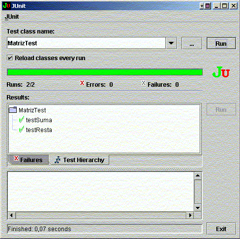
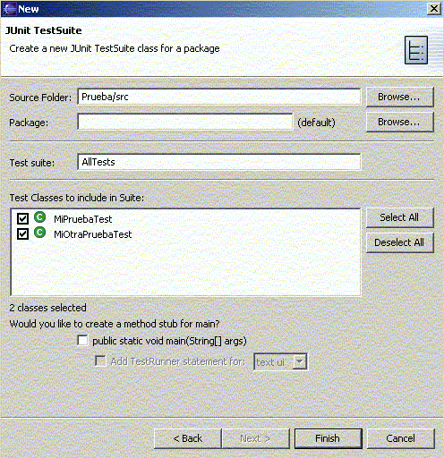
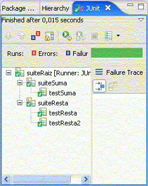
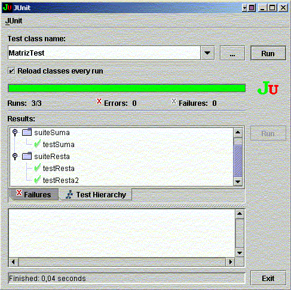

Casos de prueba: JUnit
En este tema veremos JUnit, una librería desarrollada para poder probar el funcionamiento de las clases y métodos que componen nuestra aplicación, y asegurarnos de que se comportan como deben ante distintas situaciones de entrada.
Introducción a JUnit
Cuando probamos un programa, lo ejecutamos con unos datos de entrada (casos de prueba) para verificar que el funcionamiento cumple los requisitos esperados. Definimos prueba unitaria como la prueba de uno de los módulos que componen un programa.
En los últimos años se han desarrollado un conjunto de herramientas que facilitan la elaboración de pruebas unitarias en diferentes lenguajes. Dicho conjunto se denomina XUnit. De entre dicho conjunto, JUnit es la herramienta utilizada para realizar pruebas unitarias en Java.
El concepto fundamental en estas herramientas es el caso de prueba (test case), y la suite de prueba (test suite). Los casos de prueba son clases o módulos que disponen de métodos para probar los métodos de una clase o módulo concreta/o. Así, para cada clase que quisiéramos probar definiríamos su correspondiente clase de caso de prueba. Mediante las suites podemos organizar los casos de prueba, de forma que cada suite agrupa los casos de prueba de módulos que están funcionalmente relacionados.
Las pruebas que se van construyendo se estructuran así en forma de árbol, de modo que las hojas son los casos de prueba, y podemos ejecutar cualquier subárbol (suite).
De esta forma, construimos programas que sirven para probar nuestros módulos, y que podremos ejecutar de forma automática. A medida que la aplicación vaya avanzando, se dispondrá de un conjunto importante de casos de prueba, que servirá para hacer pruebas de regresión. Eso es importante, puesto que cuando cambiamos un módulo que ya ha sido probado, el cambio puede haber afectado a otros módulos, y sería necesario volver a ejecutar las pruebas para verificar que todo sigue funcionando.
Aplicando lo anterior a Java, JUnit es un conjunto de clases opensource que nos permiten probar nuestras aplicaciones Java. Podemos encontrar información actualizada de JUnit en http://www.junit.org
Encontraremos una distribución de JUnit, en la que habrá un fichero JAR, junit.jar, que contendrá las clases que deberemos tener en el CLASSPATH a la hora de implementar y ejecutar los casos de prueba.
Integración de JUnit en Eclipse
Eclipse incorpora opciones para poder trabajar con JUnit desde él. Antes de nada, debemos tener nuestro proyecto Java ya creado, o bien crearlo nuevo. Después, hacemos click con el botón derecho sobre el proyecto, y vamos sus Properties. En ellas, vamos a Java Build Path, y en Libraries pulsamos en Add Library y elegimos la de JUnit:

Una vez añadida la librería, ya podemos crear las clases de nuestro proyecto y sus respectivos casos de prueba, como explicaremos a continuación
Un ejemplo sencillo
Supongamos que definimos una clase Matriz para manejar matrices de enteros, y una operación sumar que permite sumar dos matrices. La clase también tiene un método equals que compara dos matrices para ver si son iguales:
public class Matriz
{
int[][] elem;
public Matriz(int[][] elem)
{
... // Código del constructor
}
public Matriz sumar(Matriz m)
{
... // Código del método
}
public boolean equals(Matriz m)
{
... // Compara la matriz actual con m
}
}
Nuestro primer caso de prueba
Vamos a utilizar JUnit para probar la función de suma. Para realizar casos de prueba, debemos definir clases que hereden de la clase junit.framework.TestCase de JUnit, y que implementen métodos testXXX()(sin parámetros), que serán los que hagan las pruebas necesarias.
Para hacerlo desde Eclipse, una vez hechos los pasos del apartado anterior para configurar JUnit, vamos al menú File - New - Other y buscamos entre las opciones (normalmente dentro de Java) la de JUnit TestCase podemos también crear un caso de prueba, eligiendo el nombre del caso, y el nombre de la clase a probar:

Pulsando en Next también podemos marcar los métodos para los cuales queremos definir métodos de prueba testXXX().
En nuestro caso, definimos un subtipo de TestCase llamado MatrizTest (como convención se suele poner el mismo nombre de la clase que probamos, terminado en Test), y definimos un método testSuma() para comprobar la suma de matrices.
Una vez relleno el código de nuestra clase de prueba, quedaría algo como:
import junit.framework.*;
public class MatrizTest extends TestCase
{
final static int[][] MATRIZ = {{1, 0, 0},
{0, 1, 0},
{0, 0, 1}};
final static int[][] SUMA = {{2, 0, 0},
{0, 2, 0},
{0, 0, 2}};
public MatrizTest(String nombre)
{
super(nombre);
}
public void testSuma()
{
Matriz m1 = new Matriz(MATRIZ);
Matriz m2 = new Matriz(MATRIZ);
Matriz msumaOK = new Matriz(SUMA);
Matriz msumaTest = m1.sumar(m2);
assertTrue(msumaOK.equals(msumaTest));
}
}
El constructor nos sirve para dar un nombre a la prueba. Aparte de eso, hemos definido un par de constantes que serán las matrices que usaremos en las pruebas. Construimos dos objetos Matriz, m1 y m2, cuyos valores son los de la constante MATRIZ. Después en msumaTest calculamos la suma de las dos. Finalmente, con el método assertTrue de la clase TestCase comprobamos que la matriz calculada coincide con msumaOK, que contiene el resultado correcto, el de la constante SUMA.
En general la construcción de pruebas sigue siempre estos mismos patrones: construir los objetos de prueba, y llamar al método assertTrue(...) (o cualquier otro método assertXXX(...) de TestCase) cada vez que queramos comprobar algo en el método de prueba. En el caso de que se cumplan todos los assertXXX que hayamos puesto, la prueba habrá sido satisfactoria (en nuestro caso, comparar la matriz calculada con la que debería haber salido).
Se aconseja colocar las clases de prueba en el mismo paquete que las clases a las que prueban, para facilitar después el mantenimiento y la localización. Además, de esta forma las clases de prueba podrían tener acceso a campos y métodos internos a los que no podrían acceder desde fuera del paquete.
Crear clases a partir de las pruebas
Eclipse también nos permite definir las clases de prueba antes que las clases que probamos, por ejemplo, podemos definir un caso de prueba MiPruebaTest, para probar el método miMetodo() de una clase MiPrueba aún no definida, que debe devolver "Hola":
public class MiPruebaTest extends TestCase
{
public void testMiMetodo()
{
MiPrueba mp = new MiPrueba();
assertTrue(mp.miMetodo().equals("Hola"));
}
}
Al escribir este código la línea que declara MiPrueba aparece con una luz amarilla a la izquierda. Pinchando sobre ella nos aparecen varias opciones:

Eligiendo Create class... podremos crear la clase a partir de la prueba. Nos creará la clase vacía, que tendremos que rellenar con los métodos apropiados. También podríamos forzar a que los constructores y ciertos métodos getXXX(...) y setXXX(...) los dejara hechos también, pero en algunas versiones de Eclipse no funciona bien esta característica.
Ejecución de pruebas
Cuando tengamos definida la clase de prueba que queramos ejecutar, y la clase a probar, vamos desde la clase de prueba a Run - Run As - JUnit test. Nos aparecerá la ventana de JUnit en Eclipse con los resultados:

Arriba tendremos una barra roja o verde (según si ha habido fallos o no), después las pruebas erróneas y la jerarquía de todas las pruebas realizadas, y finalmente los errores producidos.
Se puede relanzar un test pulsando Ctrl + F11, y haciendo doble click en los errores iremos a la línea de código que los provocó. También podemos definir cuantos tests queramos en la clase de prueba, y se ejecutarán todos ellos.
Ejecutar pruebas fuera de Eclipse
Para ejecutar pruebas por sí solas, debemos utilizar un ejecutor de pruebas (test runner). JUnit proporciona algunos de ellos, como junit.textui.TestRunner (para mostrar los resultados en modo texto), o junit.swingui.TestRunner (para mostrar los resultados gráficamente). Para ejecutarlos podemos incluir el jar junit.jar en el CLASSPATH al ejecutar:
java -cp ./junit.jar junit.swingui.TestRunner
Nos aparecería una ventana donde indicamos el nombre del caso de prueba que queremos ejecutar (o lo elegimos de una lista), y luego pulsando Run nos mostrará los resultados:

La barra verde aparece si las pruebas han ido bien, y si no aparecerá en rojo. En la pestaña Failures podemos ver qué pruebas han fallado, y en Test Hierarchy podemos ver todas las pruebas que se han realizado, y los resultados para cada una. En el cuadro inferior nos aparecen los errores que se han producido en las pruebas erróneas.
Para ejecutar el TestRunner u otro ejecutor de pruebas, podemos también definirnos un método main en nuestra clase de prueba que lance el ejecutor, en nuestro caso:
public static void main (String[] args)
{
String[] nombresTest = {MatrizTest.class.getName()};
junit.swingui.TestRunner.main(nombresTest);
}
Vemos que al main del TestRunner se le pueden pasar como parámetros los nombres de las clases de prueba que queremos probar.
Pruebas con lanzamiento de excepciones
Imaginemos que queremos probar un método miMetodo() en la clase Matriz que funciona bien si lanza una excepción de tipo IOException, y en caso contrario su comportamiento es erróneo. En ese caso, el código del método de prueba sería:
public void testMiMetodo()
{
Matriz m = new Matriz(...);
try
{
m.miMetodo();
fail("Debería haber saltado una excepción");
} catch (IOException e) {
}
}
Se utiliza el método fail(...) para generar el error en el caso de que no se lance la excepción (se coloca después del método que debería lanzarla). Si no se ejecuta el fail, es porque hemos saltado al catch, y la prueba saldrá satisfactoria (no es necesario ninguna llamada a un método assert...()).
Múltiples pruebas
Veremos ahora cómo definir varias pruebas dentro de una misma clase, cómo establecer configuraciones globales para todas las pruebas de dicha clase, y cómo categorizar diferentes clases de prueba dentro de una suite de pruebas.
Múltiples pruebas de una clase
Imaginemos que definimos una nueva operación en nuestra clase Matriz, para restar dos matrices:
public Matriz resta(Matriz m)
{
... // Código del método
}
Para probar esta nueva operación, definimos un nuevo método testResta() en nuestra clase MatrizTest, con las constantes adicionales necesarias:
import junit.framework.*;
public class MatrizTest extends TestCase
{
...
final static int[][] RESTA = {{0, 0, 0},
{0, 0, 0},
{0, 0, 0}};
...
public void testResta()
{
Matriz m1 = new Matriz(MATRIZ);
Matriz m2 = new Matriz(MATRIZ);
Matriz mrestaOK = new Matriz(RESTA);
Matriz mrestaTest = m1.restar(m2);
assertTrue(mrestaOK.equals(mrestaTest));
}
}
En este caso, al probarlo la clase MatrizTest se mostrarán los resultados de las dos pruebas:

Inicialización y terminación
Observemos en la clase MatrizTest que en los métodos testSuma() y testResta() hay código repetido, en concreto el código referido a construir los objetos de prueba (m1 y m2). Cuando tengamos código común en las pruebas, podemos redefinir el método setUp() de TestCase para colocar dicho código que se ejecutará antes de realizar las pruebas:
import junit.framework.*;
public class MatrizTest extends TestCase
{
...
Matriz m1, m2;
...
public void setUp()
{
m1 = new Matriz(MATRIZ);
m2 = new Matriz(MATRIZ);
}
public void testSuma()
{
Matriz msumaOK = new Matriz(SUMA);
Matriz msumaTest = m1.sumar(m2);
assertTrue(msumaOK.equals(msumaTest));
}
...
}
También tenemos un método tearDown() en el caso de que queramos liberar algunos recursos. En este caso no es necesario, porque el garbage collector de Java se encargará de eliminarlos de memoria, pero sí sería útil utilizarlo si por ejemplo hemos insertado registros de prueba en una base de datos, para borrarlos y así no dejar rastros con la prueba.
Suites de pruebas
Imaginemos que definimos otra operación de resta en la clase Matriz, para restar matrices a la inversa (si resta() hacía A - B, el nuevo método resta2() hará B - A):
public Matriz resta2(Matriz m)
{
... // Código del método
}
Paralelamente, definimos nuestro método de prueba testRestar() en nuestra clase MatrizTest:
public void testResta2()
{
Matriz mrestaOK = new Matriz(RESTA);
Matriz mrestaTest = m1.resta2(m2);
assertTrue(mrestaOK.equals(mrestaTest));
}
A medida que vamos acumulando métodos de prueba, nos podría interesar organizarlos o agruparlos de determinada forma. Mediante las suites podemos asignar métodos de prueba a grupos. Para ello, añadimos a nuestra clase de prueba (MatrizTest, en nuestro caso), un método suite() que devuelva una instancia de la clase junit.framework.TestSuite (de la interfaz junit.framework.Test que implementa dicha clase). Recordemos que también podemos estructurar las suites en forma de árbol.
Para crear suites de pruebas en Eclipse, podemos ir a File - New - Other y buscar (normalmente dentro de Java) la opción JUnit TestSuite. Ahí le indicamos el nombre de la suite, y las clases de prueba que queremos incluir en ella.

Creará una clase con un método estático llamado suite, donde construiremos la estructura de la suite de pruebas. Por ejemplo, a continuación creamos una suite principal, a partir de la cual generamos dos subsuites, una para la prueba de suma y otra para las pruebas de resta. Para ello añadimos lo siguiente en MatrizTest:
public static Test suite()
{
TestSuite suite = new TestSuite("suiteRaiz");
TestSuite suiteA = new TestSuite("suiteSuma");
TestSuite suiteB = new TestSuite("suiteResta");
suiteA.addTest(new MatrizTest("testSuma"));
suiteB.addTest(new MatrizTest("testResta"));
suiteB.addTest(new MatrizTest("testResta2"));
suite.addTest(suiteA);
suite.addTest(suiteB);
return suite;
}
Para ejecutar la suite, la ejecutamos (Run As) como un JUnit Test. Aparecerá la ventana de JUnit con los tests realizados:

Observar que podemos, en una suite, definir pruebas de distintas clases (no sólo de MatrizTest, en este caso), y así poder controlar todo desde una sola estructura de árbol, si nos conviene. También podemos añadir con el método addTest todas las pruebas de una clase entera, construyendo la suite con el campo class de la clase que se quiere probar:
public static Test suite()
{
TestSuite suite = new TestSuite();
suite.addTest(new TestSuite(MatrizTest.class));
return suite;
}
Ejecutar suites desde fuera de Eclipse
Definimos el main como:
public static void main (String[] args)
{
junit.swingui.TestRunner.run(MatrizTest.class);
}
El método run() de TestRunner internamente llama al método estático suite() que hemos definido, y al cargar el TestRunner nos aparecerá una vista en árbol de las suites creadas:
